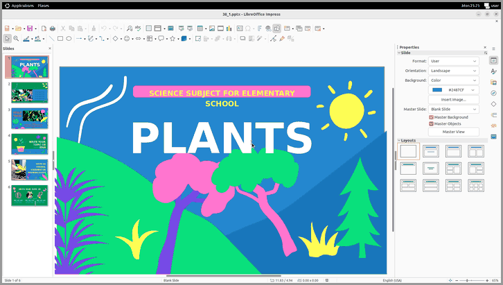

Any CUA
10+ built-in agents — GPT, Claude, Qwen, UI-TARS, MAI-UI — or compose your own from the building blocks we ship.
agents.make("gpt-5.5", env=env)
CUA-Lite is one lightweight framework to evaluate, fine-tune, and RL any computer-use agent across Desktop, Web, and Mobile — a unified action & observation space, a standardized data format, and one command to run it all.
Pick a model and a platform — the same code runs it. That's the whole point.

Swap --model-id or --env-id for any of the
10+ agents and
envs. Nothing else changes.
Eval, data, and RL — one schema and one interface across every agent and environment.
10+ built-in agents — GPT, Claude, Qwen, UI-TARS, MAI-UI — or compose your own from the building blocks we ship.
agents.make("gpt-5.5", env=env)
One unified action + observation space across Desktop, Web, and Mobile. Drop any agent into any env with near-zero overhead.
gym.make("lite.osworld@...")
One schema — LiteSample — for all data. Fine-tune at scale from
Corpora,
or on demand from Rollouts.
One command evaluates any agent on OSWorld, WebArena, WebVoyager, AndroidWorld, MobileWorld, CUABench, and more.
Train any agent with RL on highly optimized tasks — CUAGym, WebGym, MobileGym — GRPO and beyond on top of Slime.
One gym.make / agents.make interface, an env-server for scale, and
a rollout that returns a ready-to-train sample.
One interface, every major computer-use benchmark across desktop, web, and mobile.
Install, then sample a trajectory in five lines.
$ uv sync --extra quick-start >>> import lite.gym as gym, lite.agents as agents >>> env = gym.make("lite.demo@create_file", max_steps=10) >>> agent = agents.make("gpt-5.5", env=env) >>> result = await agent.sample(env) # -> LiteRLSample (reward, steps, data)